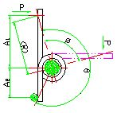
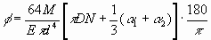
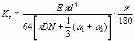
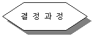
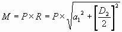
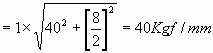
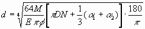
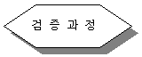
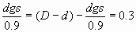

코일스프링(비틀림) 계산
■ 계산기호
|
θ : 자유각 (°) Φ : 비틀림각 (°) P : 적용하중 (Kgf) (R) : 하중작용 반경 (㎜) α1: 하중작용점까지의 팔길이 (㎜) α2 : 지지점까지의 팔길이 (㎜) dgs : Guide Shaft 직경 (㎜) ※ △D : Φ작용시 코일 평균경 감소량 |
M(모멘트) = P × R D : 코일 평균경 (㎜) D1 : 코일 내경 (㎜) D2 : 코일 외경 (㎜) N : 유효 감김수 E : 종탄성 계수 (Kgf/㎣) d: 스프링 선경 (㎜) Kt : 비틀림 스프링 상수 (Kgf · ㎜/deg) |
■ 비틀림 스프링의 주요식
|
①  |
②  |
|
③ dgs와 D1(내경)이 접촉하지 않을 조건 : dgs = 0.9(D - △D)또는 △D = D1 - *0.9값은 안전율의 의미
|
|
■ 적용예
<조 건>
|
재질 : PW-1 (E = 21×103 Kgf/㎣) θ ≒ 180°, Φ ≒ 90°, p = 1Kgf α1 = 40㎜, α2=0 N, d를 결정하고 dgs를 구하라!
|

관련기구물과의 간섭을 고려하여 코일외경(D2)을
먼저, 가정함.
D2 = 8을 가정하면,


임의의 N과 D(<8)값을 몇가지 경우로 조합하여 가정함.
N= 3 D = 6 N=4 D = 6 N=5 D = 6
D = 7 D = 7 D = 7
또한, ①식을 d에 대해 정리하면,
 …… ⓐ
ⓐ식에, 조건에서 주어진 값들과 N과D의 조합값들을
대입하여 얻은, 선경(d)값을 해당재질의 표준경과 비교하여
적절한 값을 선택 결정함.
( 여기서는, N=5, D=6일때 적절한 선경값인 , d≒1.3 나옴 )
∴ N=5, D=6, d=1.3으로 결정!

이미 결정된 값들을 ② 식에 대입하면,
Kt ≒ 0.478(Kgf·㎜/deg)
∴ M = Kt · φ = 0.478×90=43(Kgf·㎜)
앞서 계산한 모멘트값 (40Kgf·㎜)과 거의 일치함.
따라서, 결정된 값들은 적절함!
<dgs 결정과정>
이미, 결정된 D, d를 고려하여
먼저, dgs값을 결정함. (dgs = 4로 가정)
③ 식으로 부터,
△D = D1 - 
dgs<D1 - △D를 만족시키면 가정은 적절함.
∴ 4<4.7-0.3 (만족) 'dgs = 4 로 결정함.'